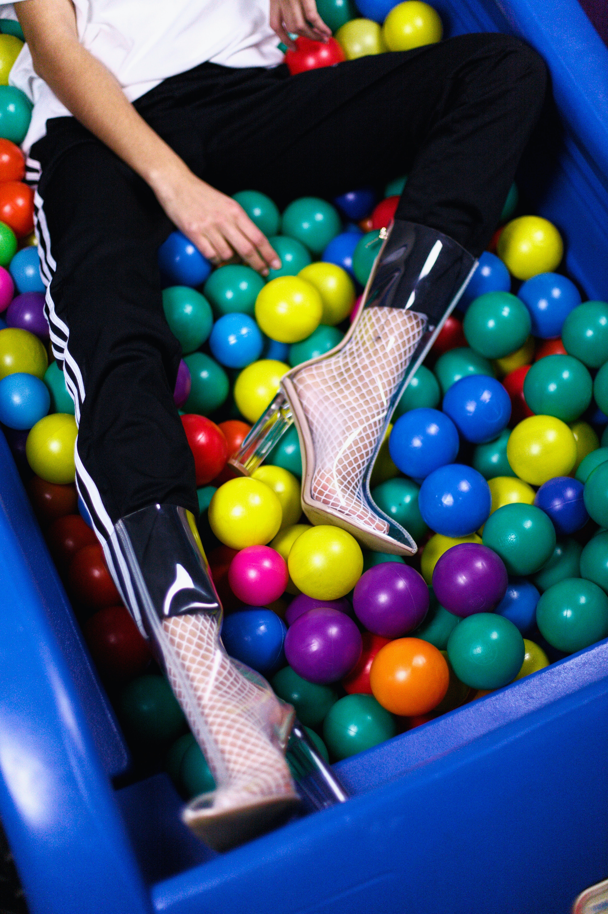

Design Challenge
Step 1
Figuring out the design challenge is the first step into creating a more effective website for Responsibly in Fashion.
Step 1
Figuring out the design challenge is the first step into creating a more effective website for Responsibly in Fashion.

Step 3
Next in the process is figuring out what the target audience of Responsibility in Fashion is. This will help shape the goals of the website.